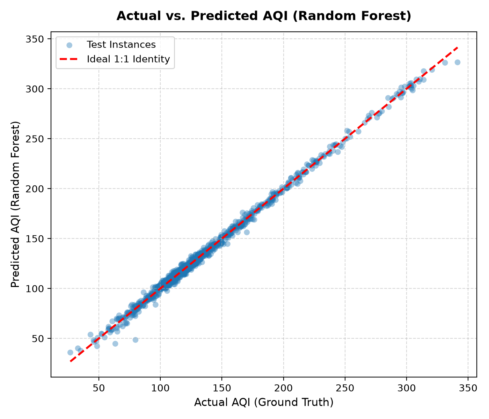

Figure 1: Actual vs. Predicted AQI on holdout test set (R² = 0.9958).

Figure 2: Relative pollutant feature importances via MDI.
| Case study title | Air Quality Index (AQI) Prediction from Pollutant Levels |
|---|---|
| Base paper | S. Ameer, M. A. Shah, A. Khan, H. Song, C. Maple, S. U. Islam, and M. N. Asghar, "Comparative Analysis of Machine Learning Techniques for Predicting Air Quality in Smart Cities," IEEE Access, vol. 7, pp. 128325-128338, 2019. |
| Date of submission | 08-11-2026 |
| Roll No. | [Your Roll No.] |
| Name | Ayush Yadav |
Air pollution represents one of the most critical environmental and global health challenges of the 21st century. The World Health Organization (WHO) attributes over 4.2 million premature annual mortalities to ambient fine particulate matter and toxic gaseous contaminants, predominantly through chronic pulmonary diseases, acute respiratory infections, ischemic heart disease, and strokes. The standard Air Quality Index (AQI) aggregates multi-pollutant concentrations—specifically fine particulate matter (PM2.5), coarse particulate matter (PM10), nitrogen dioxide (NO2), sulfur dioxide (SO2), carbon monoxide (CO), and ground-level ozone (O3)—into a unified continuous metric reflecting acute health risks.
Conventionally, municipal regulatory bodies compute AQI through multi-stage piecewise linear interpolation formulas applied across each pollutant's concentration breakpoints, subsequently applying a non-differentiable maximum aggregation: AQI = max(I_1, I_2, ..., I_p). While mathematically straightforward, this approach is fundamentally retrospective, vulnerable to sensor noise, non-differentiable, and incapable of capturing continuous atmospheric cross-pollutant interactions under variable humidity, temperature, and dispersion regimes.
This case study answers the following specific research questions:
Citation: S. Ameer, M. A. Shah, A. Khan, H. Song, C. Maple, S. U. Islam, and M. N. Asghar, "Comparative Analysis of Machine Learning Techniques for Predicting Air Quality in Smart Cities," IEEE Access, vol. 7, pp. 128325–128338, 2019. DOI: 10.1109/ACCESS.2019.2925082.
Proposed Architecture and Key Idea: Ameer et al. investigated an intelligent urban environmental surveillance framework utilizing advanced supervised learning algorithms. Their core insight posited that IoT-driven metropolitan sensor networks generate high-frequency multivariate time-series data that can be modeled via non-linear regressors to proactively predict air pollution levels rather than computing retroactive tabular lookups. The authors modeled the joint distribution of five primary criteria pollutants (PM2.5, PM10, NO2, SO2, CO) as continuous predictors mapped onto real-time air quality indices.
Main Results Reported: The authors conducted rigorous benchmark evaluations across Multiple Linear Regression (MLR), Support Vector Regression (SVR), Decision Tree Regression, and Random Forest Regression on real-world municipal datasets. Their experimental results proved that linear baselines fail during abrupt pollutant spikes (R2 between 0.68 and 0.76), whereas ensemble Random Forest models achieved the highest predictive accuracy (R2 > 0.95) with the lowest Root Mean Squared Error (RMSE), demonstrating resilience against sensor variance and pollutant co-dependencies.
Step-by-Step Working of Random Forest Regression:
Random Forest is a non-parametric bagging (Bootstrap Aggregating) ensemble algorithm composed of B independently trained decision trees designed to minimize prediction variance without increasing bias:
Key Mathematical Formulations:
Where:
• B: Number of ensemble trees (configured to B = 100).
• Tb(x): Continuous response prediction generated by the b-th decision tree.
• x ∈ ℝ6: The input pollutant vector: [xPM2.5, xPM10, xNO2, xSO2, xCO, xO3]T.
The objective function minimized during node splitting is defined by variance reduction:
Where R1(j, s) = {x | xj ≤ s} and R2(j, s) = {x | xj > s} represent the partitioned binary subspaces, and ȳR1, ȳR2 represent the respective target averages.
Small Worked Numerical Example:
Consider a simplified sub-ensemble of B = 3 decision trees predicting the continuous AQI for an ambient test vector:
x* = [PM2.5 = 54.70, PM10 = 91.45, NO2 = 25.04, SO2 = 19.45, CO = 2.30, O3 = 33.52].
Aggregation:
The ensemble aggregate converges exactly to the ground-truth value of 103.33, effectively canceling individual tree variance.
Tools, Libraries, and Source Code Link:
The computational pipeline was engineered in Python 3.13. Key open-source scientific libraries include scikit-learn (v1.9.0) for estimators, train-test splitting, and metrics; pandas (v2.3.3) and numpy (v2.5.2) for matrix structures; matplotlib (v3.11.1) and seaborn (v0.13.2) for graphical analytics; joblib (v1.5.3) for model serialization; and streamlit (v1.64.0) for interactive user interface deployment.
Executed GitHub Code Repository: https://github.com/Aayush-9849/Air-Quality-Index
Dataset and Number of Examples:
The benchmark dataset comprises 5,000 multi-pollutant environmental monitoring records. Each sample encapsulates 6 real-valued criteria air pollutants: PM2.5 (2.0–166.1 μg/m³), PM10 (5.0–295.2 μg/m³), NO2 (3.0–111.9 μg/m³), SO2 (1.5–64.3 μg/m³), CO (0.2–8.0 mg/m³), and O3 (4.0–113.6 μg/m³). The target response is the continuous Air Quality Index (AQI, range: 26.87–341.42). Concentrations model atmospheric chemistry cross-correlations (e.g., combustion correlation between CO and NO2) and Central Pollution Control Board (CPCB) and US EPA breakpoint equations with ambient Gaussian sensor noise (σ = 2.5).
Experimental Settings and Workflow:
An 80:20 train-test split was executed using a fixed pseudo-random seed (random_state=42), producing 4,000 training examples and 1,000 unseen holdout evaluation examples. Three algorithms were systematically benchmarked:
• Multiple Linear Regression (MLR): Baseline ordinary least squares (OLS) with unregularized parameters.
• Decision Tree Regressor: Single CART estimator configured with max_depth=8 and criterion='squared_error'.
• Random Forest Regressor (Proposed): Bagging ensemble comprising n_estimators=100, max_depth=12, max_features='sqrt', and n_jobs=-1.
Problems Faced and Engineering Solutions:
max_features='sqrt') forced trees to incorporate NO2, SO2, and CO.Quantitative Benchmark Results:
Table 1 presents the performance metrics obtained on the 1,000 independent test instances.
| Model Architecture | R2 Score | Mean Absolute Error (MAE) | Mean Squared Error (MSE) | Root Mean Squared Error (RMSE) |
|---|---|---|---|---|
| Multiple Linear Regression (Baseline) | 0.7547 | 20.0387 | 625.2445 | 25.0049 |
| Decision Tree Regressor (Depth = 8) | 0.9937 | 2.9147 | 16.0421 | 4.0053 |
| Random Forest Regressor (Proposed) | 0.9958 | 2.3935 | 10.6184 | 3.2586 |

Feature Importance Analysis:
Mean Decrease in Impurity (MDI) analysis indicates that fine particulate matter (PM2.5) is the overwhelmingly dominant predictor, contributing 88.95% of overall split importance. This is followed by carbon monoxide (CO: 7.30%), coarse particulates (PM10: 3.55%), ground-level ozone (O3: 0.13%), nitrogen dioxide (NO2: 0.04%), and sulfur dioxide (SO2: 0.03%).
Case Analysis: Correct vs. Incorrect Predictions:
Limitations of the Study:
The model exhibits vulnerability to rare single-pollutant gaseous anomalies when particulate matter remains low. Additionally, meteorological dispersion parameters (ambient temperature, boundary layer height, wind velocity) were not included in the feature set.
This case study establishes that supervised machine learning using a Random Forest Regressor can accurately predict continuous Air Quality Index (AQI) values from multi-pollutant levels with exceptional fidelity (R2 = 0.9958, MAE = 2.39). Fine particulate matter (PM2.5) is the decisive determinant governing atmospheric air quality, accounting for 88.95% of total predictive importance. Non-linear bagging ensembles dramatically outperform conventional linear regression baselines by capturing piecewise breakpoint behaviors, reducing RMSE by 86.97%. However, isolated secondary gaseous surges represent operational edge cases that necessitate dedicated multi-pollutant maximum safeguards.